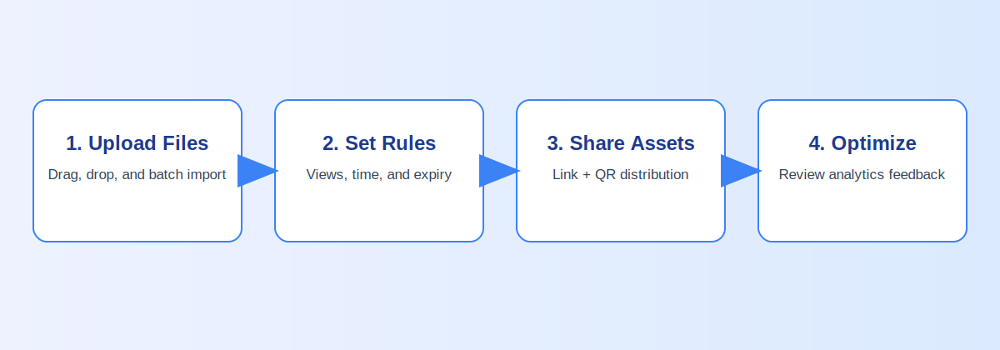
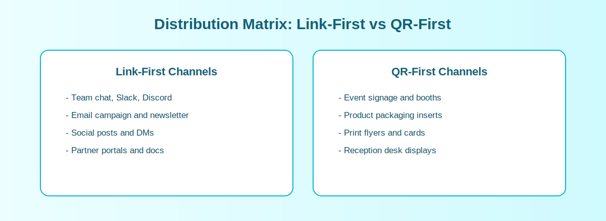

How to Create an Image Sharing Link (Without the Usual Mess)
A practical, no-hype guide for how to generate image sharing links using MaiIMG's real workflow: one link for up to 25 images, QR sharing, view limits, and revoke access.
What MaiIMG actually helps with
- Upload an image set and generate one share link (up to 25 images per link)
- Turn that link into a QR code for offline and mobile sharing
- Set view limits and expiration rules
- Revoke access with one click after sharing
Simple workflow


How to use this in real scenarios
Use direct links for chat, email, and social posts. Use QR codes for events, posters, and printed assets. For sensitive content, set limits before distribution and revoke access when the campaign ends.
Quick checklist before you share
- Keep each link focused (up to 25 images).
- Use link-first for chat/email, QR-first for offline materials.
- Set view limits or expiry for sensitive content.
- Revoke access when the content is outdated.